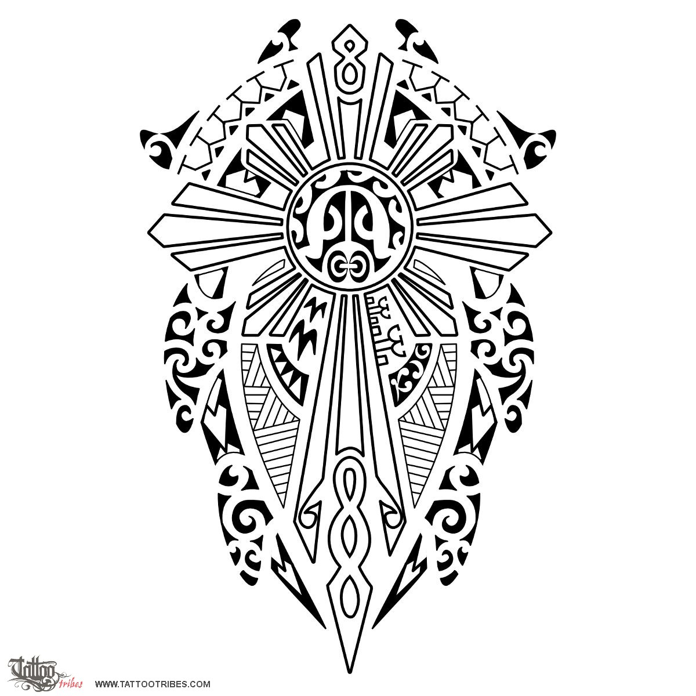
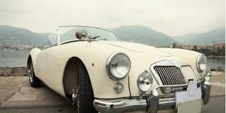
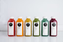

Thai and Fillipino
#adopted
Just got my drivers license (legally, 16) so yay, so like...wanna go to Pressed Juicery? I’ll drive-
Aquarius
Papino is my imaginary bunny/dog
Bay Area
Rising Junior at Lynbrook High so not much else scares me



Travel
Hawaii-number one favorite
Thailand-fun, love the desserts, kinda tied with japan
Japan-i was really young so i don’t remember that much but I think it was fun
Korea-I remember it but like it was ok, i missed my friends at home
Canada-kinda but not really, it was a cruise type thing so
Hong Kong-don’t really remember it but it wasn’t that fun
New York-did not like it, it was for a choir trip so
Massachusetts-went here most winters, some summers to visit grandparents
Maryland-went once or twice to visit my cool uncle
Australia-I was a baby so I don’t remember it at all
Things I like to do
Dancing:Ballet, Hip Hop, contemporary (a little-very-little)
Friends:Love them, 3 mains
Shopping:Probably my favorite thing in the world
Track and Field:used to do 100m, fell on blocks, scarred for life, also did jumps (triple and long...not tall enough/skilled enough for high), got shin splints so I got switched to throws (discus and shot put), hurt my wrist working out so I dropped shot put, don’t really want to do it again
Volleyball:I guess I was ok but like Im hella short and hated my coach so I #quit
Academicky
High School is not it-that's all I have to say about that
Links
So I don't really remember my password and can't log on but follow me on instagram @catherine.rayos